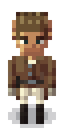
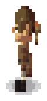
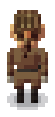

Lark
A girl from the quays who runs errands for Odda and knows where everything is
Lark: A girl from the quays who runs errands for Odda and knows where everything is.
History
The first person you meet and the one you come home to. She grows up through the game; at level 45 she steers Odda's sloop. The heart of the game
Description
A harbour girl who runs errands for Odda and knows where everything is. The first person you meet, the one you come home to, and the heart of the story.
Gallery





